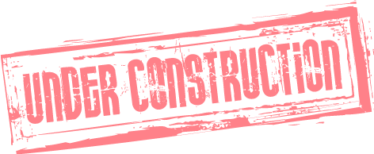

This site was built using HTML5, Javascript, CSS, Bootstrap framework, JQuery framework.
Perfomance was enhanced with Google's tool in https://developers.google.com/speed/pagespeed/insights/?hl=pt-BR

Future tasks:
1) Make 2 versions of the website: English and Portuguese.
2) Add more projects
3) Iterate through the projects to generate the portfolio automatically
4) Add links to contact me: github, e-mail, linkedIn facebook
5) Put a resume about who I am (use the one made with Udacity)
6) Create a page to send a message to me with some subjects (hiring, suggestions, others...)
7) For each project open a new window or modal showing pictures, description and link to download
8) Create menu (it can occupy just one corner or maybe one row at the top) to access all pages available
9) Mouse icon change when it hovers over links
10) Use graphics and other visual cool things
11) Look up windows and microsoft templates fot resume and others to inspire
12) USARR CDN para importar bibliotecas!!!!!!!!!!!!!
13) Drag and drop em algum lugar
14) Hamburguer menu - off canvas pattern
15) Google api ou outros apis
16) Inserir AJAX requests
17) Colocar campo de Search